🏮 Welcome, traveler. Here lie the three books that stand beside the Hall of Glories in Lanternhall: the foes of each world, the great foes who rule them, and all a bearer ought to know. Read before thou ridest out, or after a hard fall. A great foe's ways lie folded, for those who would meet him first.
📕 The Book of Foes
Know thy foe, and keep thy hearts.
Reading the Plates
Each foe hath a plate, a fierceness of one to five flames, and how many blows lay it low. Below are how it fighteth, how to fell it, and its tale.
The First Rule
❤️ Every blow from any foe costeth one whole heart. Two hearts on the Normal oath, one on the Hard.
👁️ Every foe warneth before it striketh. Learn the warning, and the blow is thine to dodge.
🔥 Cinderkeep
The keep of the cold hearth. Its foes are hot of head and short of temper.
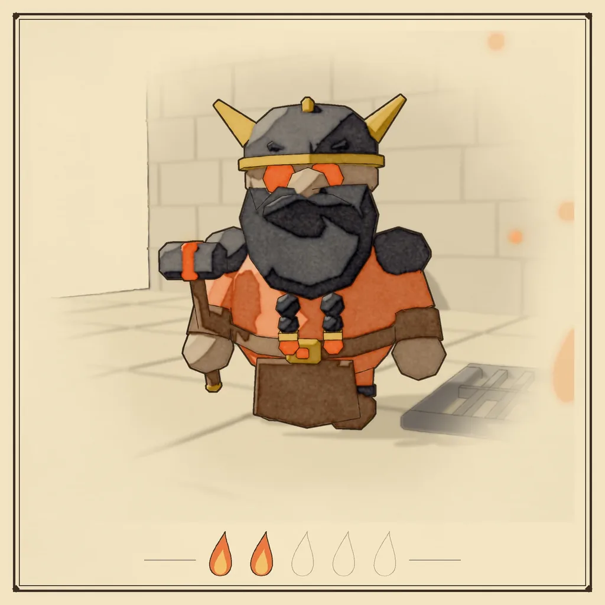
Cindershank
the Rusher
Fells in
2 sword blows, 2 arrows, or 1 headshot
Where
All over Cinderkeep, and every Pit wave
Tip
Stand back to back; no rusher gets behind.
How It Fighteth
It boileth up out of an ash grate and runneth at thee, faster than thou walkest. Close by, it stoppeth, its eyes flare bright, and half a breath later the fist cometh. Then it catcheth its breath.
How to Fell It
👁️ When the eyes flare, step back or raise thy shield.
⚔️ Then strike twice. Each blow knocketh it back a stride.
🏹 One arrow to the head felleth it.
🔥 A hall never sendeth more than six at once.
Lore
The lore book telleth what they are: unswept ash. This book addeth that they hate brooms, sing badly, and each one thinketh itself the Emberking's favourite. They laugh when a bearer falleth. They do not know why.
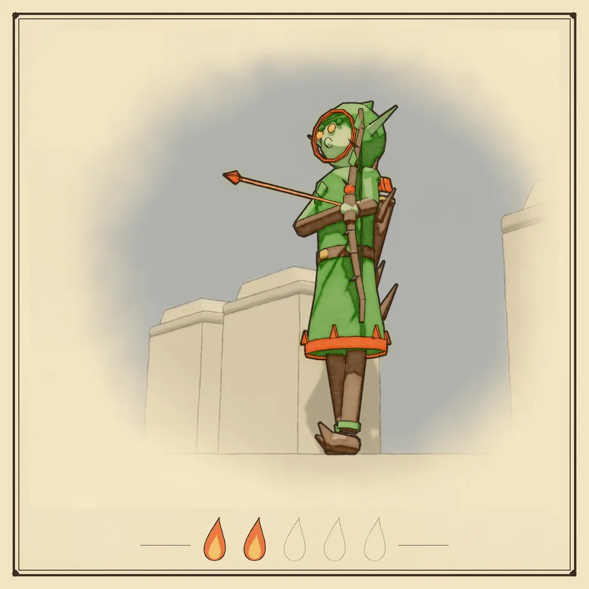
Thornshot
the Elf Archer
Fells in
2 sword blows, 2 arrows, or 1 headshot
Where
Walls, ledges and galleries above thee
Tip
One bearer shieldeth; the other shooteth.
How It Fighteth
It keepeth to its ledge and looseth every few breaths at the nearest bearer it can see. The orange glow on the drawn arrow is thy warning. Come near, and it backeth away along its ledge.
How to Fell It
🛡️ Raise thy shield toward the orange glow.
⚔️ A quick, sharp swing at the arrow sendeth it back with double bite.
🏹 Or shoot first: one arrow to the head.
🪜 It retreateth along its ledge, so corner it at the end.
Lore
The Thornwood elves came to Cinderkeep as guests, to trade arrows for ale by the great hearth. When the hearth went cold they stayed to keep warm, and the cinders kept them. Their aim is still good. Their manners are not.
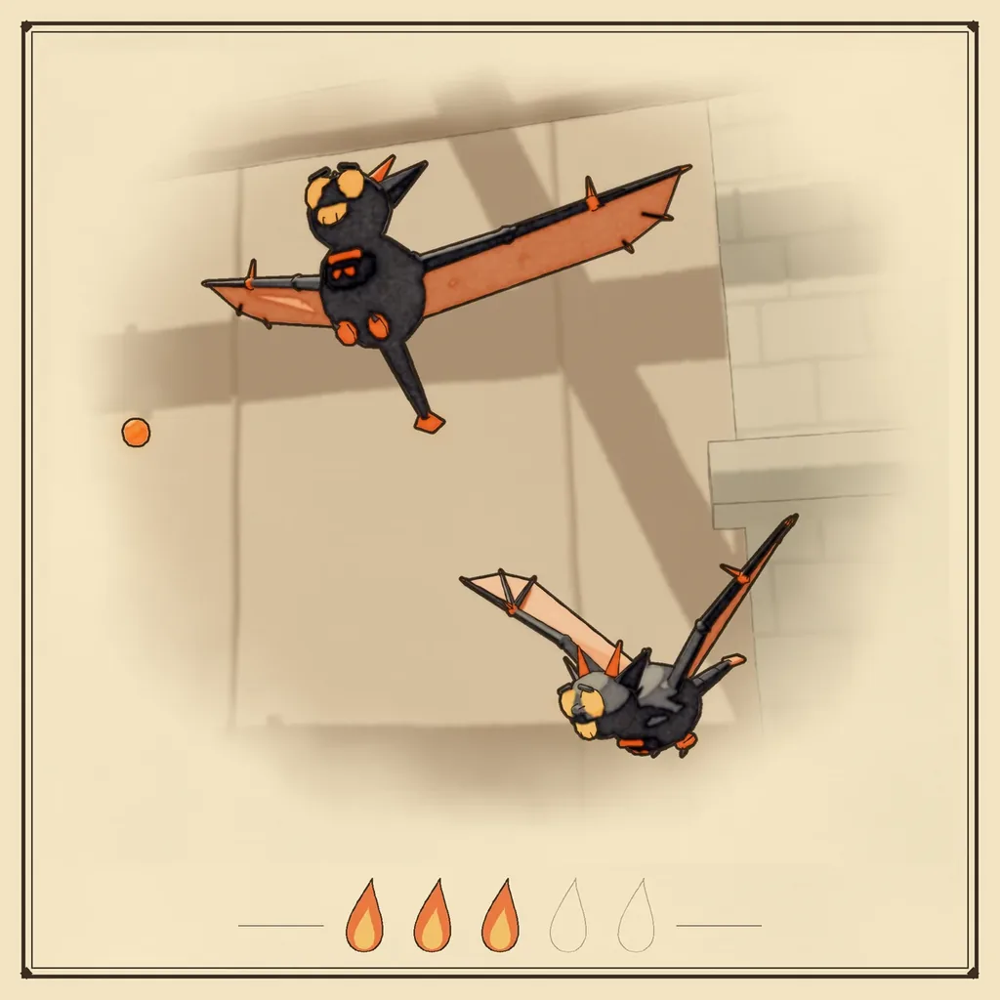
Cinderwing
the Ember Bat
Fells in
1 arrow · 2 sword blows (1 when stunned)
Where
Rafters and high halls; the Pit from wave 6
Tip
Call "Bat!" and point. Shields up together.
How It Fighteth
It hovereth out of reach and keepeth its distance. Before it spitteth, it holdeth still, its wings flare and its mouth gloweth. The fireball floateth slowly. After each shot it swoopeth low for a breath or so, then climbeth away.
How to Fell It
🏹 One arrow to the body felleth it.
⚔️ Swat its fireball back with a brisk swing: the bat falleth.
🛡️ Shields and arrows stop fireballs.
⚔️ Strike when it swoopeth low.
🔔 In the Belfry, ring the bell: every bat is stunned.
Lore
Cinderwings roost in the keep's cold chimneys and hate a clean flue. They hoard soot the way magpies hoard spoons. A sleepy Cinderwing is almost sweet. There are no sleepy ones left.
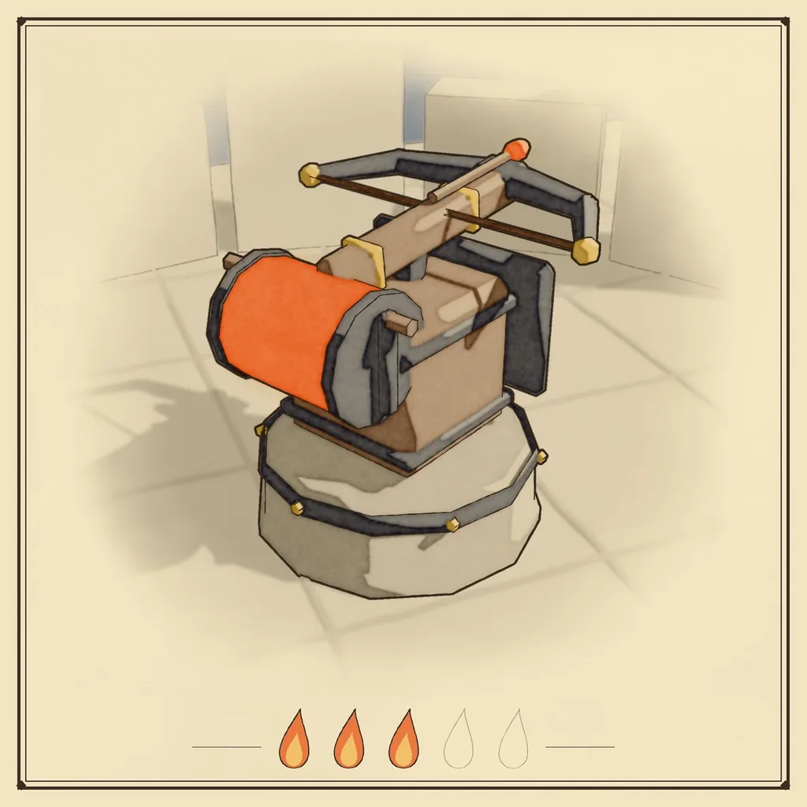
Spitebolt
the Crossbow Turret
Fells in
2 arrows to the drum · 4 sword blows
Where
Tower tops, the Belfry; the Pit from wave 8
Tip
One draweth its aim; another goeth behind.
How It Fighteth
It is no beast but a machine, and it turneth all the way round. When the bolt tip gloweth red and the ratchet clicketh, a swift bolt followeth within a breath. Then it windeth again for a few breaths.
How to Fell It
🎯 Its weak spot is the glowing winch drum on its back: two arrows.
🛡️ Shield the bolt, or parry it with a swift swing.
⚔️ Swords bite its iron plate twice as hard as arrows.
🔔 The Belfry bell spoileth its aim a while.
Lore
Spitebolts were built to guard the walls against wolves and worse. Nobody remembered to teach them who the friends were. They click when they are pleased. They are pleased far too often.
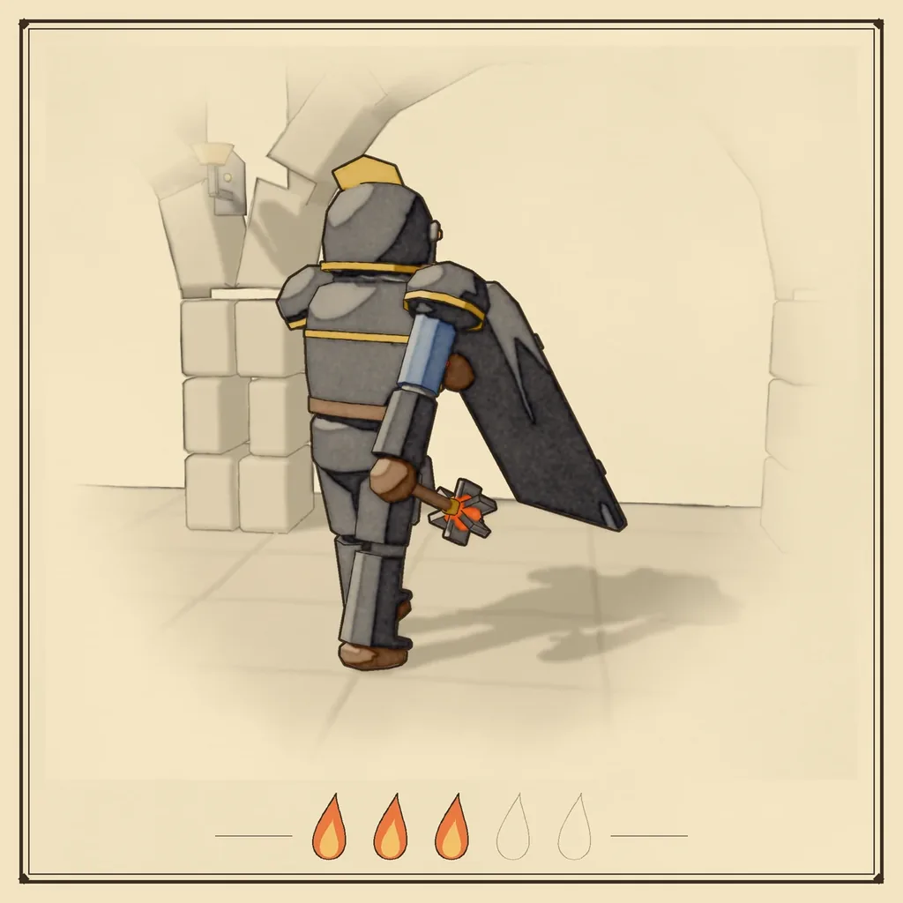
Ironback
the Shieldbearer
Fells in
6-8 blows · 3-4 to the gold back vent
Where
Cellars, the Gaol, halls; Pit from wave 4
Tip
One holdeth its eye; another striketh its back.
How It Fighteth
Its tower shield covereth its whole front, and it turneth slowly. It raiseth its mace for most of a breath, then bringeth it down. Hug its shield too long and it shoveth thee off.
How to Fell It
🔄 Go round behind it. The small gold vent on its back taketh double.
⚔️ Dodge the mace: a miss sticketh it in the floor, shield down. Strike the grille on its chest.
♨️ Steam staggereth it.
Lore
Ironbacks were the keep's door wardens. They carried their shields so long that they forgot how to set them down. Some still guard doors that are no longer there.
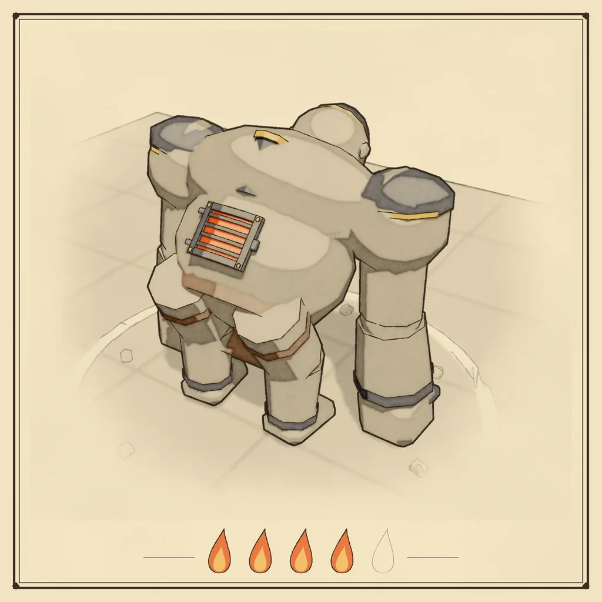
Hulker
the Brute
Fells in
20 back blows alone · 32 for four
Where
The Ashen Hall, Belfry, Boiler House; Pit wave 10
Tip
Seven quick blows together make it flinch.
How It Fighteth
Big, slow and stone-skinned. It raiseth both fists while a ring spreadeth on the floor round it, and a breath later it slammeth. Close in front, it swipeth with one arm. It cannot be knocked back.
How to Fell It
⭕ Step out of the ring before the slam.
🎯 After a slam it is stuck, head down: arrows to the head bite thrice, swords twice.
🔥 Its back grate taketh full harm; its hide but half.
♨️ Steam it, then strike.
Lore
Hulkers once hauled coal for the great ovens. Now the coal burneth inside them, and they are not cruel, only very, very cross. Offer one a seat and it will sit on thee.
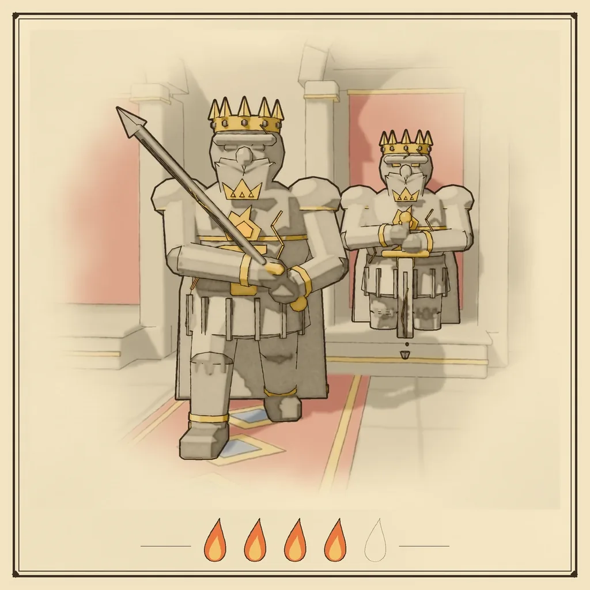
Watchers
the Stone Knights
Fells in
Never. No weapon harmeth them.
Where
The Gallery of Kings only
Tip
Share them out: each bearer watcheth one.
How It Fighteth
A Watcher moveth only when no one looketh at it. Turn away and it glideth closer, stone grinding. Up close its eyes flare, then it striketh. Look at it during the flare and the blow is stopped.
How to Fell It
👁️ Thou canst not fell it. Watch it instead.
🔙 Walk backwards with thine eyes upon it.
🤖 Alone, the Warden's gaze counteth too.
➡️ Hurry on; they sleep again when the grille riseth.
Lore
The Watchers are the old kings' knights, carved to keep the Gallery. Stone is shy, and hateth to be seen. The cinders made them bold, but no less shy.
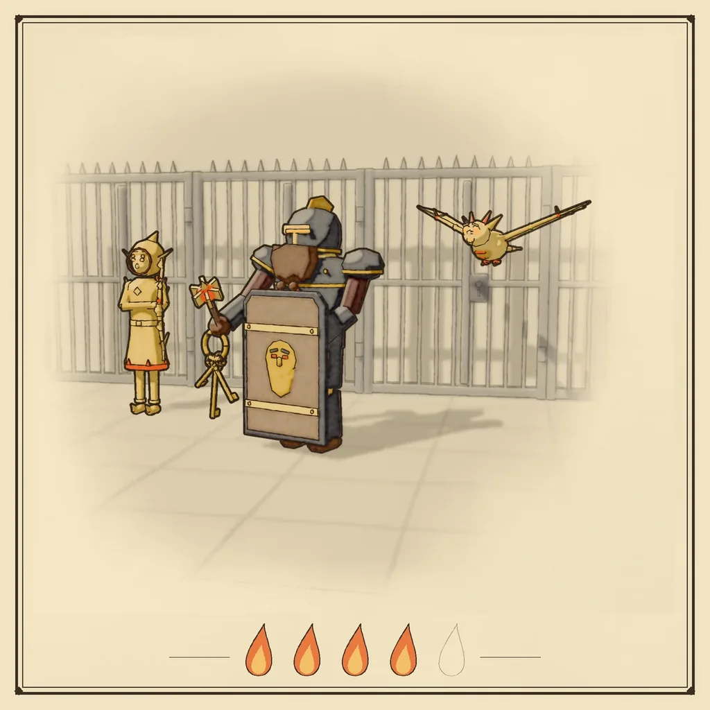
The Gilded
the Elite Foes
Fells in
More blows than plain kin · gold bat: 2 hits
Where
The Gaol, the upper keep, and the Ember Pit
Tip
Gilded foes pay double coins. Worth the fuss.
How It Fighteth
Gold-trimmed kin of the plain foes: tougher, quicker, and their warnings a little shorter. The gold bat spitteth two fireballs. The gold archer looseth three arrows in a fan. The gold turret shooteth flaming bolts.
How to Fell It
🦇 The gold bat taketh exactly two hits; a headshot will not do. Steam toucheth it not.
🏹 Step out of the middle of the archer's fan.
🔑 Fell the Gaoler for the Gaol's ring key.
❤️ A flaming bolt still costeth but one heart.
Lore
Gilding is the Emberking's favour: a lick of gold for his proudest servants. It maketh them fierce, and vainer still. A gilded Ironback hath been seen polishing itself in the middle of a fight.
Three great foes rule Cinderkeep. Read, if thou darest.
The Wax Seals
🔏 In the hall, a great foe's ways lie under a wax seal until thou hast met him. Here they lie folded below his tale. Open the fold only if thou wouldst know.
The Great Foes
❤️ A great foe's blow costeth one heart, like any other.
🛡️ Each weareth armour that shrugs off plain blows. Find the way through it, and he falleth fast.
👀 Each warneth before every blow.
🔥 Cinderkeep
The masters of the cold hearth.
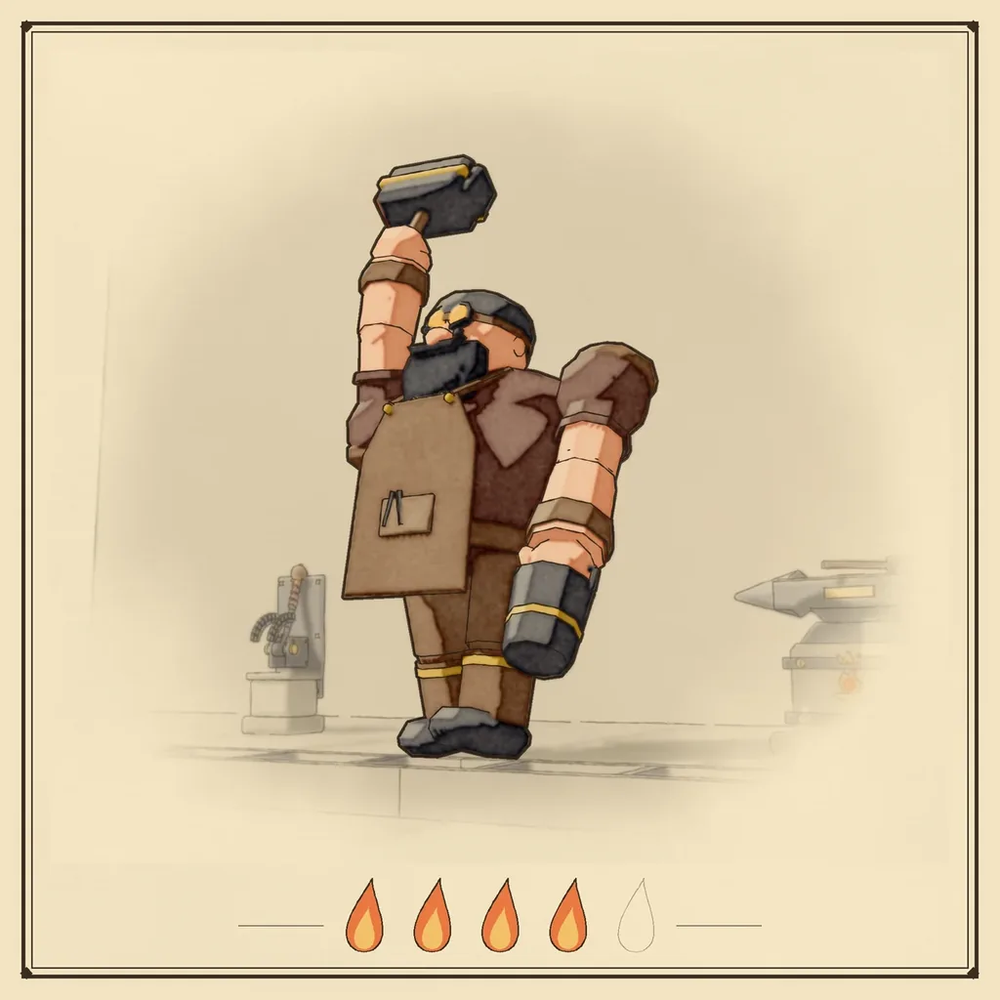
Anvilgrim
the Iron-Hided Smith
Where
The Anvil Pit in the Forge; Pit wave 15
Lore
Anvilgrim was the smith who forged the Emberking's crown. He hath been sorry ever since, and being sorry hath made him very cross. He guardeth his forge so nobody seeth him weep into the bellows.
⚠ Spoilers: how to fell it
Fells in
40 steamed blows alone · 70 for four
Tip
One pulleth the lever; the rest strike.
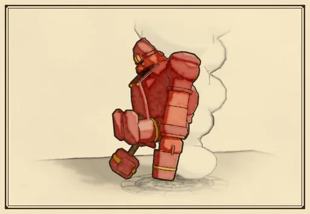
His Armour
🛡️ Iron hide: plain blows do a quarter.
♨️ Steam him on a vent grate: he sitteth, glowing red, and blows bite full.
Blows and Tells
🔨 Hammer high: a ring on the floor. Step out.
✨ A scoop: three sparks in a fan. Shield them, or swat them.
🐂 He paweth the floor, goggles flaring: the charge. Step aside; he standeth winded after.
Later Phases
🔥 At half his strength he roareth. His blows quicken, and the hammer falleth twice.
🦇 Cinderwings come once over the lava, and Cindershanks rise beside him.
♨️ The vents refill a little faster.
How to Fell Him
1️⃣ Draw him onto a vent grate.
2️⃣ Pull the lever: the steam sitteth him down. His head taketh double.
3️⃣ Strike while he gloweth red, about six breaths.
🔥 The glowing grate on his back taketh double, steam or none.
In Fellowship
⚙️ Name a lever-bearer for each vent. Call "Now!" when he standeth on the grate.
🦇 In the second half, one bow taketh the bats.
🐂 His charge striketh all near its path: spread out.
Hard and Alone
🔥 On the Hard oath one blow felleth thee; his warnings are the same. Keep thy distance until he sitteth.
🤖 Alone, the Warden calleth "Now! The lever!" when he standeth on a ready grate. The lever is thine to pull.
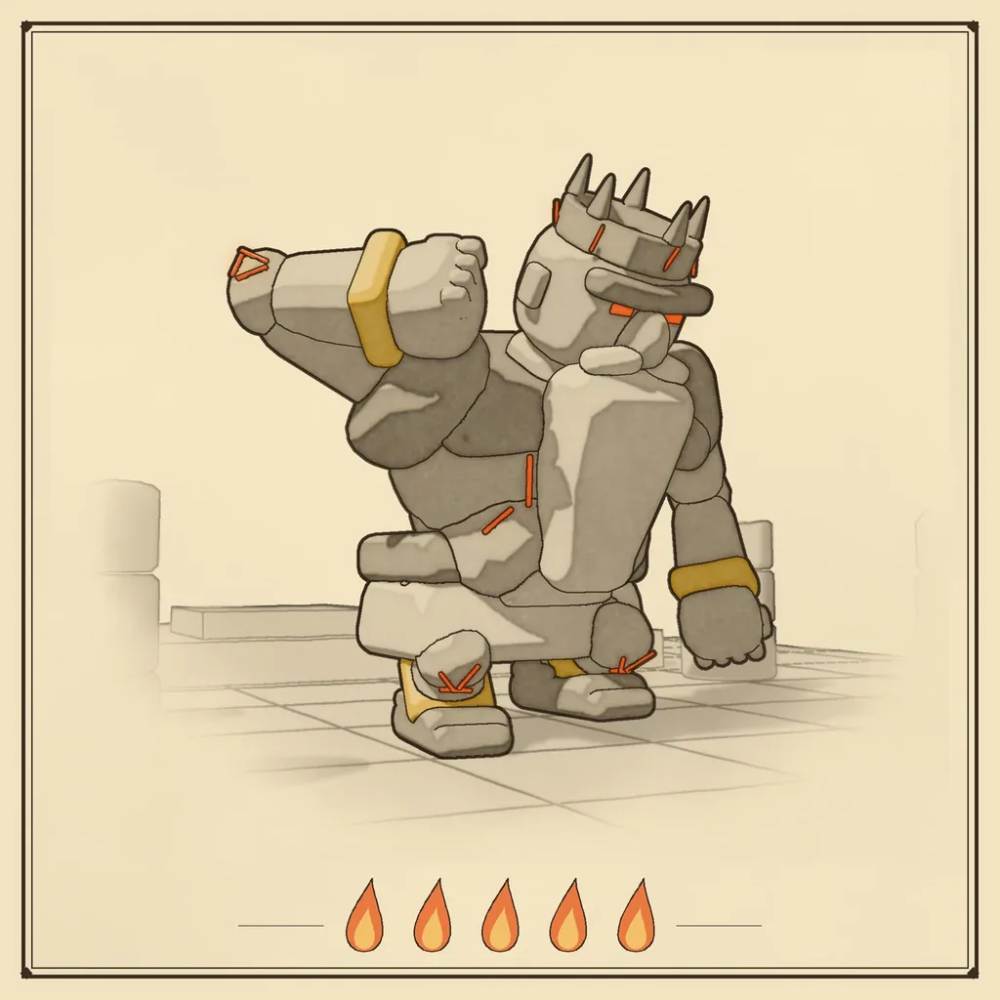
The First King
the Crowned Statue
Where
The Hall of the First King, past the Gallery
Lore
He was the first Hearthkeeper, carved in stone with the shared flame held high. The cinders woke him with all the wrong ideas. Lay him low, and perhaps the stone shall rest and remember the flame.
⚠ Spoilers: how to fell it
Fells in
Break a knee, then strike his neck
Tip
Strike only where he gloweth.
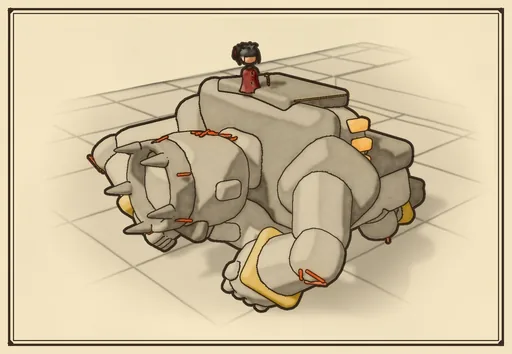
His Armour
🪨 Stone feeleth no blows.
🔥 His knees and elbows glow while he striketh: hit them then. Break a knee and he kneeleth.
Blows and Tells
✊ Arm high, a circle glowing: the slam. Step out.
↔️ Arm drawn back, grinding: the sweep. Crouch low, or get behind.
🦶 Knee lifted: the stomp. Hide behind a pillar or climb a stair.
🪨 He lifteth rubble: shoot it twice, or step aside.
Later Phases
🔥 At half his strength: "The Ember King waketh!" Fire creepeth through the floor.
👑 He looketh at one bearer, crown brightening: a stream of fire followeth. Break his sight behind a pillar.
🦇 Cinderwings drop from the dome.
How to Fell Him
1️⃣ Strike a glowing knee. Arrows bite best.
2️⃣ The knee breaketh: he kneeleth six breaths.
3️⃣ Strike the back of his neck for double. Or jump onto his back (A) and strike the rune: triple.
🦵 A broken limb falleth off for good.
In Fellowship
🦘 While anyone standeth on his back, he moveth not, and kneeleth longer.
🏛️ The balconies are safe from the sweep: archers, go up.
🪨 Pillars break. Save them for the stomp and the fire.
Hard and Alone
🔥 On the Hard oath, strike only in the pause between his blows, about two breaths.
🛡️ Riders are always set down gently before he riseth.
🏹 Alone, shoot the knees from a stair, then close in when he kneeleth.
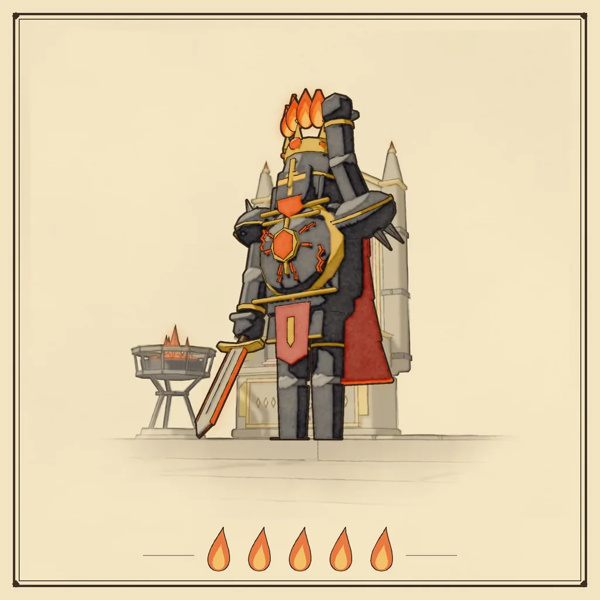
The Emberking
Lord of the Cinders
Where
The Throne Dome, the keep's heart
Lore
The lore of Cinderkeep telleth how the king became the Emberking. This only: by the cold hearth he still keepeth an empty chair for travelers. Nobody hath sat in it for a hundred years. He would like someone to.
⚠ Spoilers: how to fell it
Fells in
125 blows alone, 350 for four; crown double
Tip
Every bow on the crown when his hand riseth.
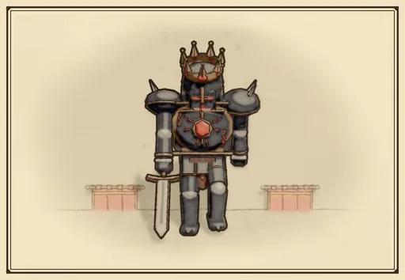
His Armour
🔥 His mantle turneth plain blows to a fifth.
🏹 Shoot the crown as his hand riseth: he gutters, and blows bite full.
Blows and Tells
⚔️ Blade drawn back: the sweep, half a circle. Step out of reach.
🗡️ Blade high: the cleave, a straight line. Step aside.
✋ Hand raised: a volley of embers. Shield, parry, and shoot the crown!
🔥 Later, ground flames: step aside.
Later Phases
🔥 He roareth at two thirds and at one third.
⚔️ Second: Cindershanks, turrets in the towers, ground flames.
🌋 Last: the outer ring burneth (stay near him), meteors fall on marked circles, and his fury chaineth sweep into cleave, then he staggereth.
How to Fell Him
1️⃣ Keep thy distance: he raiseth his hand when none is near.
2️⃣ All bows on the crown. He staggereth, then gutters dull red for a few breaths.
3️⃣ Close in. The crown taketh double.
4️⃣ Back off when the glow returneth.
In Fellowship
🏹 One bearer standeth far off to draw the volley; the rest shoot the crown.
🏰 Silence the gallery archers early, then the towers' turrets.
❤️ The Antechamber before him healeth all to full.
Hard and Alone
🔥 On the Hard oath, stand back and let the volley come to thee. It is the safest window.
🤖 Alone, the Warden calleth "Hark! Shoot ye the crown!" Its blows bite him but half: the crown is thine.